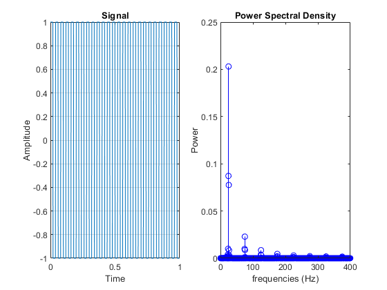

Pratik Ravikumar Sanghavi(2017AAPS0394G)
Contents
EXPERIMENT-1
Initialization
clc;
clear;
close all;
Variables
fc=100;
fs=32*fc;
t=0:1/fs:2-1/fs;
Signal Generation and FFT Computation
m=8*cos(2*pi*10*t + pi/2) + 6*cos(2*pi*40*t -2* pi/3) +7* cos(2*pi*100*t + pi/6);
N=6400;
X = fft(m,N);
X2=X(1:N/2)/(N/2);
df=fs/N;
sampleIndex = 0:N/2-1;
f=sampleIndex*df;
angle_x = angle(X2);
tolerance = 0.00001;
X3 = ceil(abs(X2) -tolerance);
X4 = round (X3 ./(X3+1));
Angle_p = angle(X2).*X4;
Angle_deg = Angle_p*180/pi;
Px=X2.*conj(X2)/2;
figure(1)
subplot(2,2,1)
plot(t,m);
xlabel('Time');
ylabel('Amplitude');
title('Signal');
grid on;
subplot(2,2,2);
stem(f,abs(X2));
title('Amplitude Spectrum');
axis([0 120 0 10]);
xlabel('frequency (f)');
ylabel('|X(f)|');
subplot(2,2,3);
stem(f,Angle_deg,'r')
title('Phase angle plot');
axis([0 120 -120 100]);
xlabel('frequencies (f)');
ylabel('Phase angle');
subplot(2,2,4);
stem(f,Px,'b');
title('Power Spectral Density');
xlabel('frequencies (Hz)');
ylabel('Power');
axis([0 120 0 35]);
EXPERIMENT 2
Initialisation
close all
Signal Generation
fc=25;
fs=32*fc;
t=0:1/fs:1-1/fs;
x=square(2*pi*fc*t,50);
Power Spectral Density
N=1600;
X = fft(x,N);
X2=X(1:N/2)/(N/2);
df=fs/N;
sampleIndex = 0:N/2-1;
f=sampleIndex*df;
Px=X2.*conj(X2)/2;
Plot Generation
figure(2)
subplot(121)
plot(t,x);
xlabel('Time');
ylabel('Amplitude');
title('Signal');
grid on;
subplot(122)
stem(f,Px,'b');
title('Power Spectral Density');
xlabel('frequencies (Hz)');
ylabel('Power');
